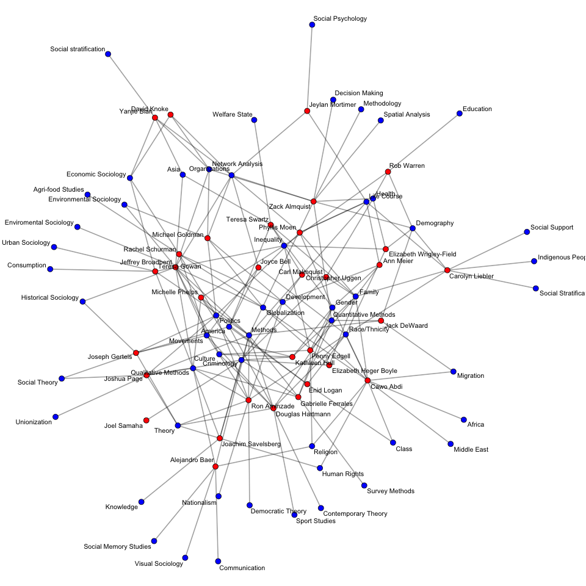

Network Methods Workshop
Social Network Analysis: Descriptives to Statistical Inference
|
 |
Overview
This is the webpage for Zack Almquist's workshop on Social Network Analysis for the MPC Inequality and Methods workshop on February 19, 2016. All R-Code and slides are available at Github. This workshop is largely based on the first several weeks of my Social Network Analysis course offered at the University of Minnesota (the syllabus can be found here) and Carter Butts's course on Social Network Methods offered at UCI.
|
Useful Links
Statnet Workshops
Social Network Analysis Online Tutorials
Social Network Analysis Books
|